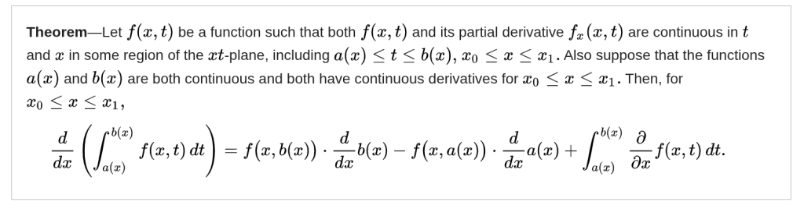

What’s there?
An exposition (I love this word sm) into techniques of Inverse Transform Sampling and the algebra of random variables.
Why do I write this?
I wanted to create an authoritative document I could refer to for later. Thought that I might as well make it public (build in public, serve society and that sort of stuff).
Inverse Transform Sampling
This is how you generate random samples from any probability distribution.
Foundations
Y’know the standard uniform distribution, U(0, 1). This is a continuous distribution where every value in the interval [0, 1] is equally likely.
We assume the existence of a pseudorandom number generator (PRNG) that can produce such samples.
Imma also just recap the properties of the CDF (F_X(x) = P(X \le x))
- It is a non-decreasing function.
- It is right-continuous.
- \lim_{x \to -\infty} F_X(x) = 0 and \lim_{x \to \infty} F_X(x) = 1. Tts range is therefore the interval [0, 1].
Intuition
A simple observation – if we apply the CDF of a random variable X to the variable itself, the resulting random variable Y = F_X(X) follows a standard uniform distribution, Y \sim U(0,1). The inverse of this statement is the key to the sampling method: if we start with a uniform random variable and apply the inverse CDF, we will generate a random variable with the desired distribution.
So cool.
Theoretical development
Theorem (Probability Integral Transform): Let X be a continuous random variable with a strictly monotonic CDF, F_X(x). Then the random variable Y = F_X(X) is uniformly distributed on [0, 1].
Proof: We want to find the CDF of Y, denoted F_Y(y) = P(Y \le y) for y \in [0, 1].
\begin{aligned} F_Y(y) &= P(Y \le y) \ &= P(F_X(X) \le y) \quad (\text{by definition of } Y) \end{aligned}
Since F_X is a strictly increasing function, its inverse F_X^{-1} exists. We can apply it to both sides of the inequality inside the probability expression without changing the direction of the inequality:
\begin{aligned} F_Y(y) &= P(F_X^{-1}(F_X(X)) \le F_X^{-1}(y)) \ &= P(X \le F_X^{-1}(y)) \end{aligned}
By the definition of the CDF of X, P(X \le x') = F_X(x'). Therefore:
F_Y(y) = F_X(F_X^{-1}(y)) = y
The CDF of the random variable Y is F_Y(y) = y for y \in [0, 1]. This is the CDF of the standard uniform distribution, U(0, 1).
Importantly, note the strictly monotonic CDF bit!
Algorithm
- Generate a uniform sample: Draw a random number u from the standard uniform distribution, u \sim U(0, 1).
- Apply the inverse CDF: Compute the value x = F_X^{-1}(u).
- Result: The resulting value x is a random sample from the distribution with CDF F_X(x).
When does this not work?
This requires the CDF to be invertible. What if it isn’t? Example – for Guassians (the most predominant stuff). Update – Advanced Methods for generating RVs
Sums and Products of Random Variables
What do we need to do?
Let X and Y be two random variables with known distributions. We define a new random variable, Z, as a function of them, for example Z = X+Y or Z=XY. The goal is to find the probability distribution of Z.
Sum of independent RVs
To find the distribution of the sum, we first find its CDF, F_Z(z) = P(Z \le z) = P(X+Y \le z). This probability is the double integral of the joint density f(x, y) over the region where x+y \le z.
F_Z(z) = \iint_{x+y \le z} f(x, y) dx dy
Wut. How can we even compute this. Yeah, dw, we use independence and say that their joint density is the product of their marginal densities, f(x, y) = f_X(x)f_Y(y).
We also differentiate – since the PDF is the derivative of the CDF (wrt z) This gives us that convolution formula!
f_Z(z) = \int_{-\infty}^{\infty} f_X(x) f_Y(z-x) dx = (f_X * f_Y)(z)
(I derive the product one properly to give better understanding, btw.)
Important Special Cases:
- Sum of Gaussians: The sum of two independent Gaussian random variables is also a Gaussian. If X \sim \mathcal{N}(\mu_X, \sigma_X^2) and Y \sim \mathcal{N}(\mu_Y, \sigma_Y^2), then Z=X+Y \sim \mathcal{N}(\mu_X+\mu_Y, \sigma_X^2+\sigma_Y^2). This is a rare case where the convolution has a simple, closed-form solution.
- Sum of Poissons: The sum of two independent Poisson random variables is also a Poisson. If X \sim \text{Poisson}(\lambda_X) and Y \sim \text{Poisson}(\lambda_Y), then Z=X+Y \sim \text{Poisson}(\lambda_X+\lambda_Y).
Product of independent RVs
Define the product
The CDF of Z, denoted F_Z(z), is the probability that Z is less than or equal to some value z.
F_Z(z) = P(Z \le z) = P(XY \le z)
Since X and Y are independent, we can express this probability as a double integral of their joint density, f(x, y) = f_X(x)f_Y(y), over the region where xy \le z.
F_Z(z) = \iint_{xy \le z} f_X(x) f_Y(y) \,dx\,dy
To make this integral solvable, we need to set explicit limits. The inequality y \le z/x or y \ge z/x depends on the sign of x. We must split the integral into two parts: one for x > 0 and one for x < 0.
Define the CDF properly
- When x > 0, the condition is y \le z/x.
- When x < 0, the condition is y \ge z/x.
This allows us to rewrite the CDF as:
F_Z(z) = \int_{0}^{\infty} f_X(x) \left( \int_{-\infty}^{z/x} f_Y(y) \,dy \right) dx + \int_{-\infty}^{0} f_X(x) \left( \int_{z/x}^{\infty} f_Y(y) \,dy \right) dx
We can express the inner integrals in terms of the CDF of Y, which is F_Y(y) = \int_{-\infty}^{y} f_Y(t) \,dt.
F_Z(z) = \int_{0}^{\infty} f_X(x) F_Y(z/x) \,dx + \int_{-\infty}^{0} f_X(x) [1 - F_Y(z/x)] \,dx
Find the PDF
The PDF, f_Z(z), is the derivative of the CDF with respect to z. We can differentiate under the integral sign using the Leibniz integral rule.
f_Z(z) = \frac{d}{dz}F_Z(z) = \frac{d}{dz}\int_{0}^{\infty} f_X(x) F_Y(z/x) \,dx + \frac{d}{dz}\int_{-\infty}^{0} f_X(x) [1 - F_Y(z/x)] \,dx
f_Z(z) = \int_{0}^{\infty} f_X(x) \frac{d}{dz}F_Y(z/x) \,dx + \int_{-\infty}^{0} f_X(x) \frac{d}{dz}[1 - F_Y(z/x)] \,dx
Using the chain rule, the derivative of F_Y(z/x) with respect to z is:
\frac{d}{dz}F_Y(z/x) = f_Y(z/x) \cdot \frac{1}{x}
Substituting this back into our expression:
f_Z(z) = \int_{0}^{\infty} f_X(x) f_Y(z/x) \frac{1}{x} \,dx + \int_{-\infty}^{0} f_X(x) \left(-f_Y(z/x) \frac{1}{x}\right) \,dx
f_Z(z) = \int_{0}^{\infty} f_X(x) f_Y(z/x) \frac{1}{x} \,dx + \int_{-\infty}^{0} f_X(x) f_Y(z/x) \frac{-1}{x} \,dx
For the first integral, x > 0, so \frac{1}{x} = \frac{1}{|x|}. For the second integral, x < 0, so \frac{-1}{x} = \frac{1}{|x|}. Since both integrands are now identical, we can combine the two integrals back into one:
f_Z(z) = \int_{-\infty}^{\infty} f_X(x) f_Y(z/x) \frac{1}{|x|} dx
Sources
